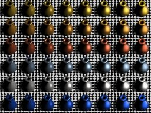
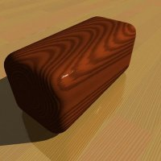
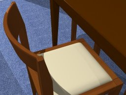
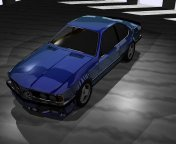
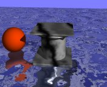

Blizzard III
Highlights
Hier sind ein paar Bilder, die ich mit meinem selbstentwickelten Raytracer Blizzard III erzeugt habe. Neu sind prozedurale Wolken, Holz, Marmor und Granit. Der Raytracer läuft unter Linux, Solaris (32 Bit und 64 Bit) und Windows. Durch seine Multithreading- Fähigkeit nutzt er jede verfügbare CPU. Schön wäre z.B. eine vollbestückte Sun E10K, um mal die Kühlanlage zu testen;-)
Teekannen aus unterschiedlichen Materialien:
{kind=link}
(ca. 92 KByte)
Rechenzeit ca. 21 Sekunden auf einem Dual Pentium III 1000 MHz.
Diverse Materialien nach dem Cook/Torrance Shading model
{kind=link}
(ca. 550 KByte) Rechenzeit ca. 50 Sekunden für 48 Frames auf einem Dual Pentium III 1000 MHz.
Holzklotz auf Parkettboden
{kind=link}
(ca. 107 KByte) Rechenzeit ca. 17 Sekunden auf einem Dual Pentium III 1000 MHz.
Stühle in unserer Eßecke
{kind=link}
(ca. 160 KByte) Rechenzeit ca. 3 Minuten auf einem Dual Pentium III 1000 MHz.
Stilleben mit realistisch wirkendem Glas
{kind=link}
(ca. 96 KByte)
Rechenzeit knapp 9 Minuten auf einem Dual Pentium III 1000 MHz.
Parkett als prozedurale Textur
{kind=link}
(ca. 103 KByte)
Autohaus
(ca 10,2 MByte)
Rechenzeit ca. 280 Minuten auf einem Dual Pentium III 1000 MHz.
Wolken mit Seifenblase im Zeitraffer
(ca. 1,8 MByte)
Rechenzeit ca. 16 Minuten für 500 Frames auf einem Dual Pentium III 1000 MHz.
Marmorsockel im Wasser
(ca. 2,9 MByte)
Rechenzeit ca. 8 Minuten für 500 Frames auf einem Dual Pentium III 1000 MHz.